Data Mining and Machine Learning (DMML)
EEG Eye State Classification — Complete Analysis Report
Submitted to: Prof. Giuseppe Longo, Prof.ssa Roberta Siciliano (University of Naples Federico II)
Report by: Andrea Manzo, Francesco Ventimiglia, Danilo Rodriguez, Rohan Baidya
1. Data Description Overview
This section provides an overview of the EEG eye-state dataset collected using an Emotiv EPOC neuroheadset with 14 electrodes at a sampling rate of 128 Hz. The binary target variable eyeDetection indicates whether the subject's eyes were open (1) or closed (0).
1.1 Dataset Loading
The dataset is loaded from dataset/eeg_data_og.csv.
| Property | Value |
|---|---|
| Samples | 14980 |
| Features | 14 |
| Target Column | eyeDetection |
| Sampling Rate | 128 Hz |
| Recording Duration | 117.0 seconds |
1.2 Basic Statistics
Descriptive statistics for all 14 EEG channels (micro-volts).
| Channel | Count | Mean | Std | Min | 25% | 50% | 75% | Max |
|---|---|---|---|---|---|---|---|---|
| AF3 | 14980 | 4321.92 | 2492.07 | 1030.77 | 4280.51 | 4294.36 | 4311.79 | 309231.00 |
| F7 | 14980 | 4009.77 | 45.94 | 2830.77 | 3990.77 | 4005.64 | 4023.08 | 7804.62 |
| F3 | 14980 | 4264.02 | 44.43 | 1040.00 | 4250.26 | 4262.56 | 4270.77 | 6880.51 |
| FC5 | 14980 | 4164.95 | 5216.40 | 2453.33 | 4108.21 | 4120.51 | 4132.31 | 642564.00 |
| T7 | 14980 | 4341.74 | 34.74 | 2089.74 | 4331.79 | 4338.97 | 4347.18 | 6474.36 |
| P7 | 14980 | 4644.02 | 2924.79 | 2768.21 | 4611.79 | 4617.95 | 4626.67 | 362564.00 |
| O1 | 14980 | 4110.40 | 4600.93 | 2086.15 | 4057.95 | 4070.26 | 4083.59 | 567179.00 |
| O2 | 14980 | 4616.06 | 29.29 | 4567.18 | 4604.62 | 4613.33 | 4624.10 | 7264.10 |
| P8 | 14980 | 4218.83 | 2136.41 | 1357.95 | 4190.77 | 4199.49 | 4209.23 | 265641.00 |
| T8 | 14980 | 4231.32 | 38.05 | 1816.41 | 4220.51 | 4229.23 | 4239.49 | 6674.36 |
| FC6 | 14980 | 4202.46 | 37.79 | 3273.33 | 4190.26 | 4200.51 | 4211.28 | 6823.08 |
| F4 | 14980 | 4279.23 | 41.54 | 2257.95 | 4267.69 | 4276.92 | 4287.18 | 7002.56 |
| F8 | 14980 | 4615.21 | 1208.37 | 86.67 | 4590.77 | 4603.08 | 4617.44 | 152308.00 |
| AF4 | 14980 | 4416.44 | 5891.29 | 1366.15 | 4342.05 | 4354.87 | 4372.82 | 715897.00 |
1.3 Class Distribution
Distribution of the target variable eyeDetection.
| Eye State | Count | Percentage |
|---|---|---|
| Closed (0) | 8257 | 55.1% |
| Open (1) | 6723 | 44.9% |
2. Data Imputation
Data imputation handles missing or invalid values. Missing values are detected and filled using column-wise median imputation to preserve the statistical properties of each EEG channel.
Result: No missing values detected across any of the 14 EEG channels. The dataset is complete.
3. Data Visualization (Raw Data)
Visualizations help identify data distributions, correlations, and potential anomalies in the EEG signals.
3.1 Class Balance
The class-balance diagram shows the distribution of samples across eye states — essential for identifying potential class imbalance that may bias downstream classifiers.
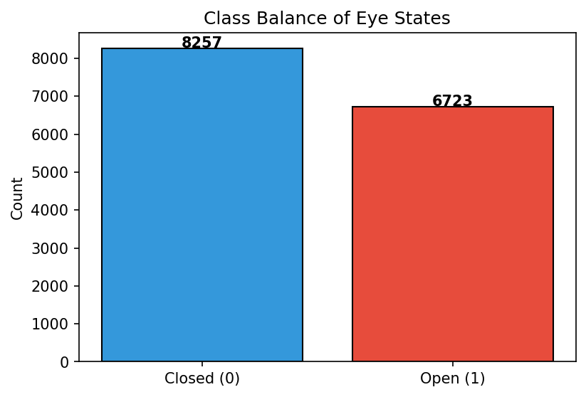
3.2 Correlation Heatmap
The correlation heatmap reveals linear relationships between EEG channels. Highly correlated channels may carry redundant information, motivating dimensionality reduction (e.g., PCA).

3.3 Box Plots
Box plots summarize the distribution of each channel and highlight potential outliers as points beyond the whiskers (1.5x IQR rule).
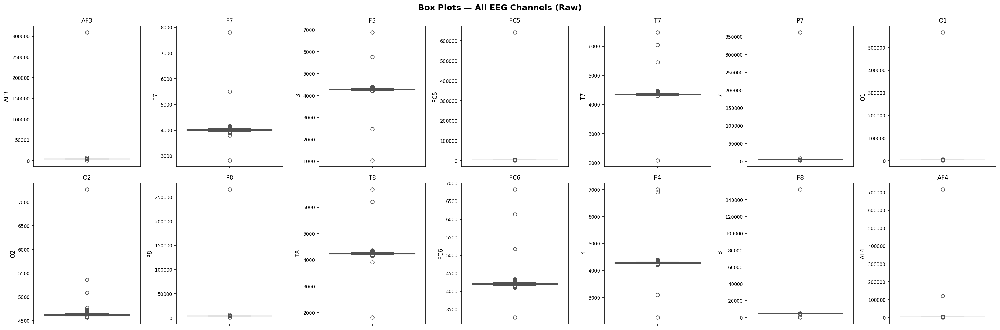
3.4 Histograms
Histograms show the amplitude distribution for each EEG channel split by eye state. Deviations from normality or bimodal patterns indicate differences between open- and closed-eye signals.
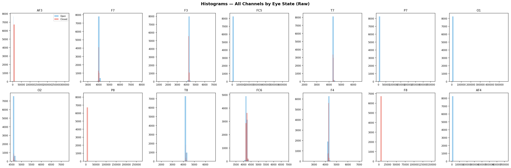
3.5 Violin Plots
Violin plots combine box-plot summaries with kernel density estimates, providing a richer view of the distribution shape for each channel across eye states.
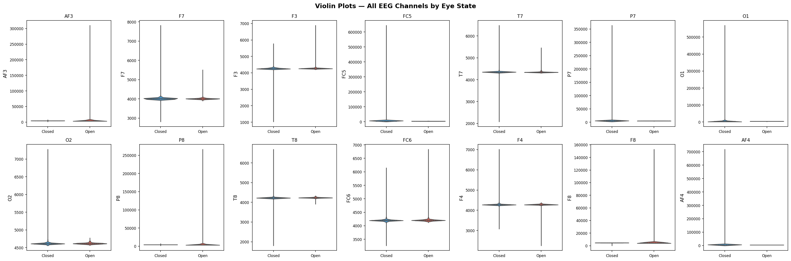
4. Outlier Removal
Outliers in EEG data often arise from muscle artifacts, electrode displacement, or external interference. This pipeline combines the IQR method (1.5x interquartile range) with the 5-sigma rule (five standard deviations from the mean). The more conservative bound is applied to retain legitimate EEG variability while removing extreme values.
| Channel | Lower Bound | Upper Bound |
|---|---|---|
| AF3 | 4233.59 | 4358.71 |
| F7 | 3942.31 | 4071.55 |
| F3 | 4219.49 | 4301.54 |
| FC5 | 4072.06 | 4168.46 |
| T7 | 4308.70 | 4370.27 |
| P7 | 4589.47 | 4648.99 |
| O1 | 4019.49 | 4122.05 |
| O2 | 4575.40 | 4653.32 |
| P8 | 4163.08 | 4236.92 |
| T8 | 4192.04 | 4267.96 |
| FC6 | 4158.73 | 4242.81 |
| F4 | 4238.45 | 4316.42 |
| F8 | 4550.77 | 4657.44 |
| AF4 | 4295.90 | 4418.97 |
| Metric | Value |
|---|---|
| Original samples | 14980 |
| Cleaned samples | 11853 |
| Removed samples | 3127 |
| Removal percentage | 20.9% |
5. Data Visualization (After Outlier Removal)
Visualizations help identify data distributions, correlations, and potential anomalies in the EEG signals.
5.1 Class Balance
The class-balance diagram shows the distribution of samples across eye states — essential for identifying potential class imbalance that may bias downstream classifiers.

5.2 Correlation Heatmap
The correlation heatmap reveals linear relationships between EEG channels. Highly correlated channels may carry redundant information, motivating dimensionality reduction (e.g., PCA).

5.3 Box Plots
Box plots summarize the distribution of each channel and highlight potential outliers as points beyond the whiskers (1.5x IQR rule).
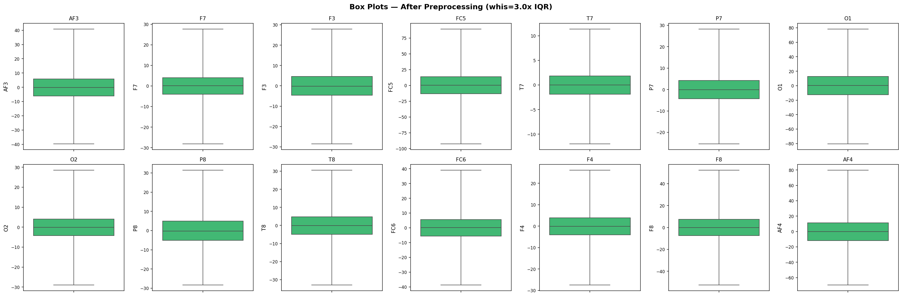
5.4 Histograms
Histograms show the amplitude distribution for each EEG channel split by eye state. Deviations from normality or bimodal patterns indicate differences between open- and closed-eye signals.
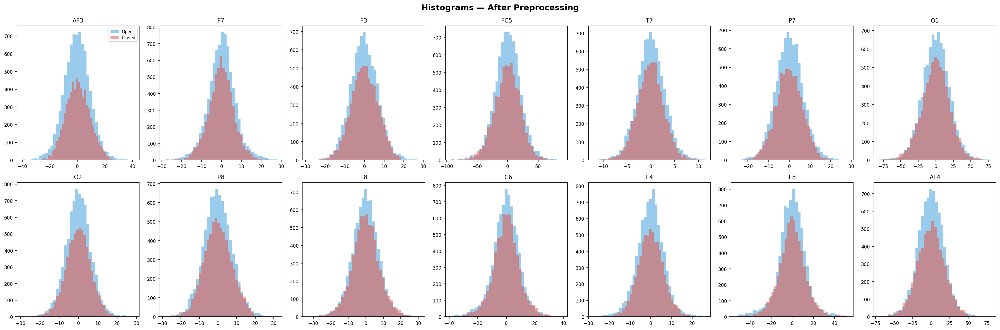
5.5 Violin Plots
Violin plots combine box-plot summaries with kernel density estimates, providing a richer view of the distribution shape for each channel across eye states.
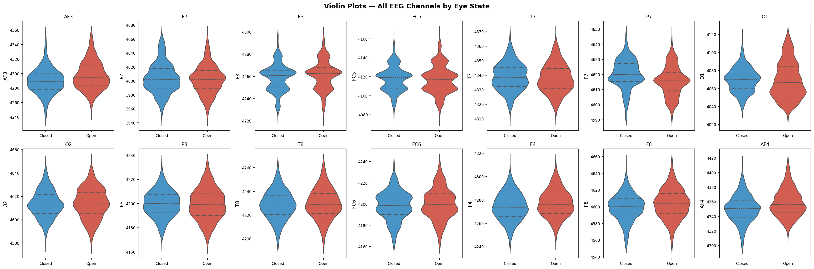
6. Log-Normalization
Logarithmic normalization compresses the dynamic range of EEG amplitudes, reducing the impact of extreme values and making distributions more symmetric. We apply log10(x - min + 1) to each channel to ensure all values are positive before transformation.
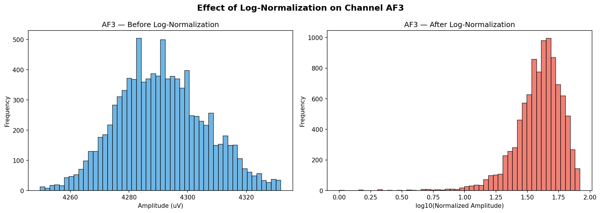
| Channel | Orig Mean | Orig Std | Norm Mean | Norm Std |
|---|---|---|---|---|
| AF3 | 4293.35 | 18.97 | 1.7538 | 0.1548 |
| F7 | 4003.52 | 21.30 | 1.7536 | 0.1789 |
| F3 | 4260.09 | 12.54 | 1.5890 | 0.1590 |
| FC5 | 4117.68 | 13.79 | 1.6337 | 0.1500 |
| T7 | 4338.55 | 9.84 | 1.4635 | 0.1580 |
| P7 | 4618.28 | 9.94 | 1.4376 | 0.1897 |
| O1 | 4069.58 | 16.94 | 1.6118 | 0.1870 |
| O2 | 4613.93 | 12.21 | 1.5661 | 0.1587 |
| P8 | 4199.73 | 12.00 | 1.5422 | 0.1681 |
| T8 | 4229.20 | 12.48 | 1.5487 | 0.1785 |
| FC6 | 4199.27 | 14.12 | 1.5821 | 0.1930 |
| F4 | 4275.49 | 11.84 | 1.5549 | 0.1595 |
| F8 | 4601.37 | 16.96 | 1.6807 | 0.1907 |
| AF4 | 4354.39 | 19.06 | 1.7468 | 0.1725 |
7. Data Visualization (After Normalization)
Visualizations help identify data distributions, correlations, and potential anomalies in the EEG signals.
7.1 Class Balance
The class-balance diagram shows the distribution of samples across eye states — essential for identifying potential class imbalance that may bias downstream classifiers.
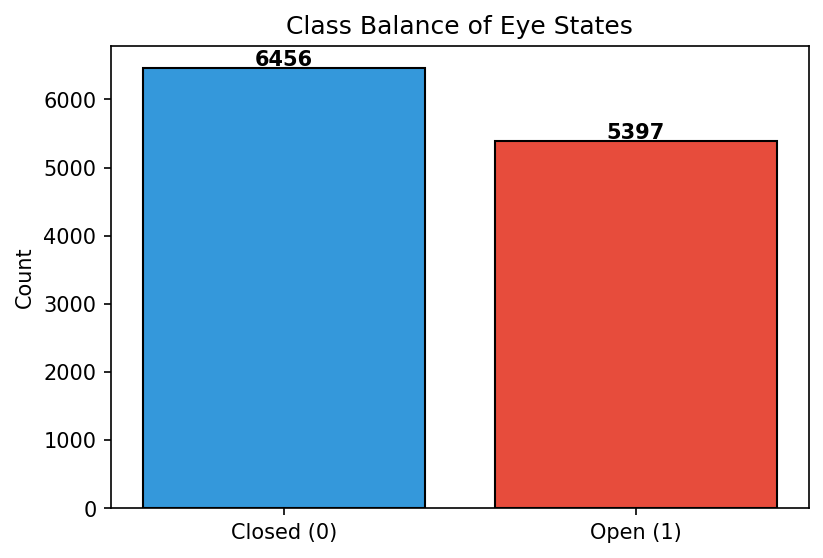
7.2 Correlation Heatmap
The correlation heatmap reveals linear relationships between EEG channels. Highly correlated channels may carry redundant information, motivating dimensionality reduction (e.g., PCA).
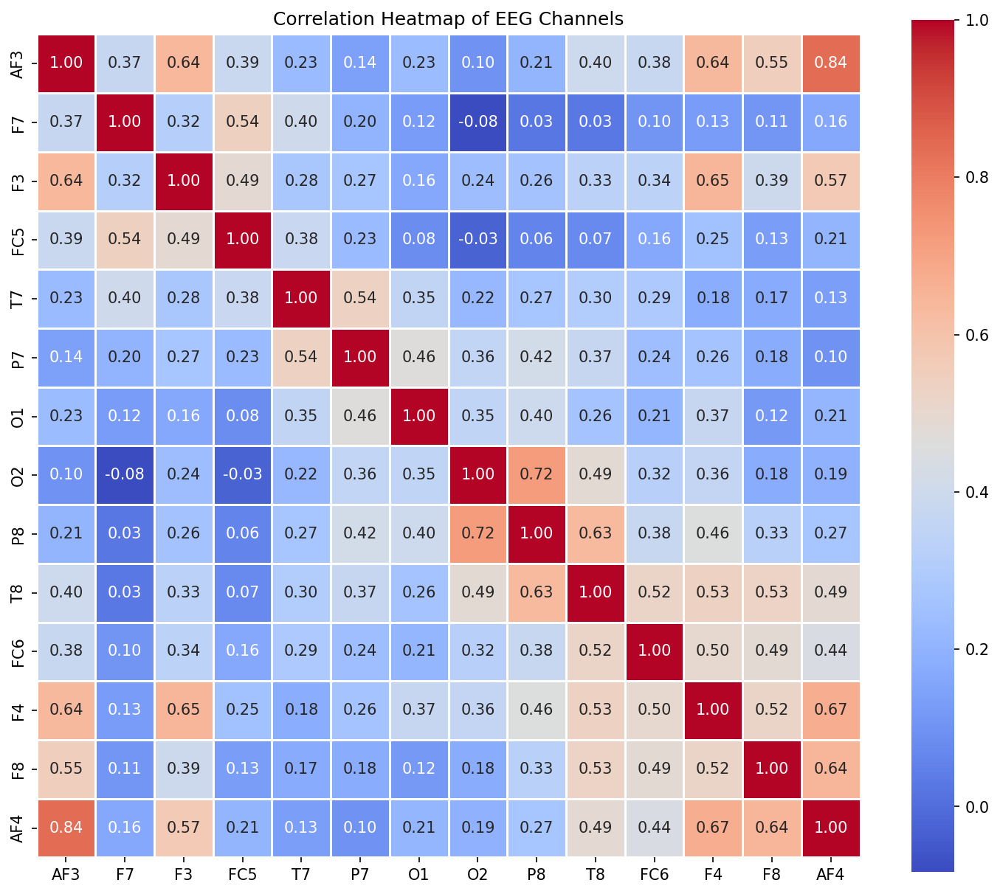
7.3 Box Plots
Box plots summarize the distribution of each channel and highlight potential outliers as points beyond the whiskers (1.5x IQR rule).
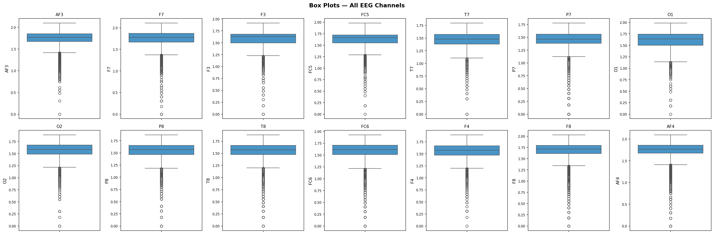
7.4 Histograms
Histograms show the amplitude distribution for each EEG channel split by eye state. Deviations from normality or bimodal patterns indicate differences between open- and closed-eye signals.
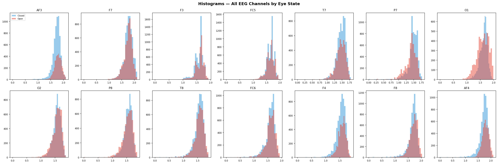
7.5 Violin Plots
Violin plots combine box-plot summaries with kernel density estimates, providing a richer view of the distribution shape for each channel across eye states.
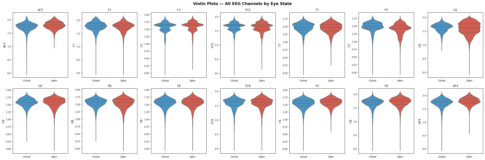
8. FFT, Spectrogram and PSD Analysis
Frequency-domain analysis transforms EEG signals from the time domain to the frequency domain, revealing the power distribution across brain wave bands: Delta (0.5-4 Hz), Theta (4-8 Hz), Alpha (8-12 Hz), Beta (12-30 Hz), and Gamma (30-64 Hz). This is critical for EEG eye-state classification since alpha power characteristically increases when eyes are closed (the Berger effect).
8.1 FFT Frequency Spectrum
The Fast Fourier Transform decomposes EEG signals into constituent frequencies. The frequency spectrum shows the power at each frequency, highlighting dominant brain-wave activity.
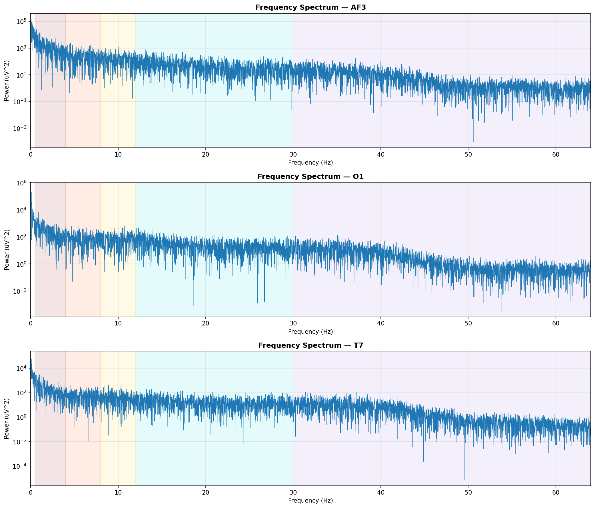
8.2 Power Spectral Density (PSD)
Welch's method estimates the PSD with reduced variance compared to raw periodograms. Comparing PSD between eyes-open and eyes-closed states reveals characteristic changes — notably increased alpha power (8-12 Hz) during eye closure.
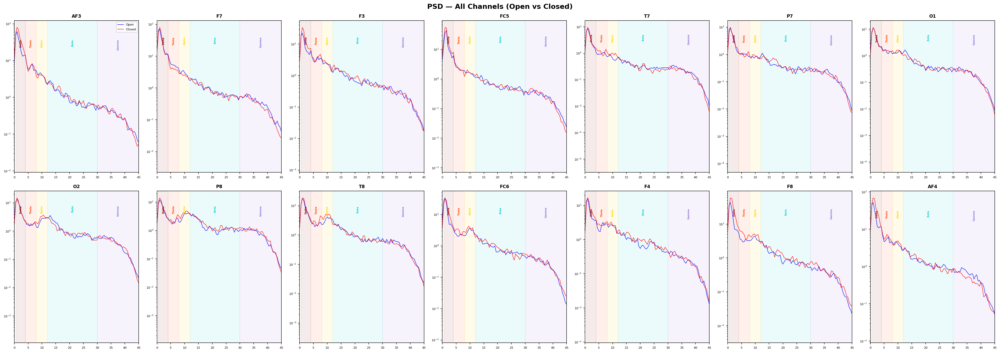
8.3 Spectrogram Analysis
Spectrograms provide a time-frequency representation of EEG signals, showing how the power at different frequencies evolves over time. This is particularly useful for identifying transient events and state transitions — and serves as the input representation for the CNN-based deep-learning model in Section 11.
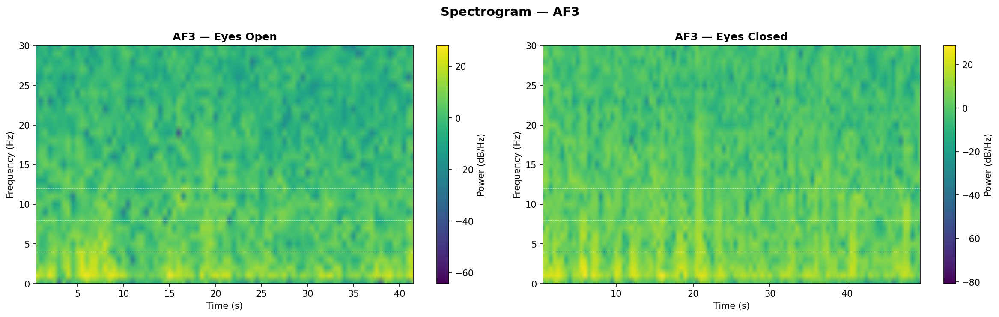
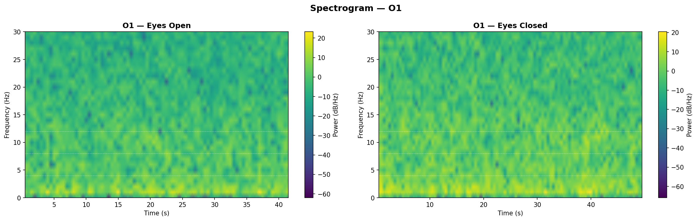
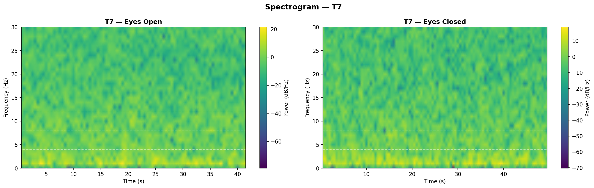
9. PCA and LDA Analysis
Dimensionality-reduction techniques project high-dimensional EEG data into lower-dimensional spaces while preserving meaningful structure. PCA (unsupervised) maximises variance; LDA (supervised) maximises class separability — both are fundamental tools for understanding the data geometry before classification.
9.1 PCA
Principal Component Analysis identifies orthogonal directions of maximum variance. Applied to the 14 EEG channels, PCA reveals how much of the total signal variance can be captured in fewer dimensions.
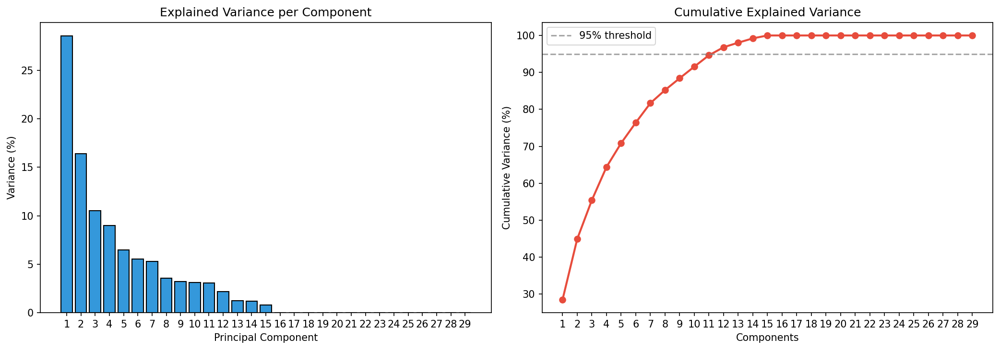
| Component | Variance Explained (%) | Cumulative (%) |
|---|---|---|
| PC1 | 43.03 | 43.03 |
| PC2 | 14.67 | 57.70 |
| PC3 | 12.09 | 69.79 |
| PC4 | 5.63 | 75.42 |
| PC5 | 5.48 | 80.89 |
| PC6 | 3.75 | 84.65 |
| PC7 | 3.14 | 87.79 |
| PC8 | 2.59 | 90.38 |
| PC9 | 2.31 | 92.69 |
| PC10 | 2.24 | 94.93 |
| PC11 | 1.82 | 96.74 |
| PC12 | 1.30 | 98.05 |
| PC13 | 1.25 | 99.29 |
| PC14 | 0.71 | 100.00 |
11 components are required to capture >= 95% of total variance.
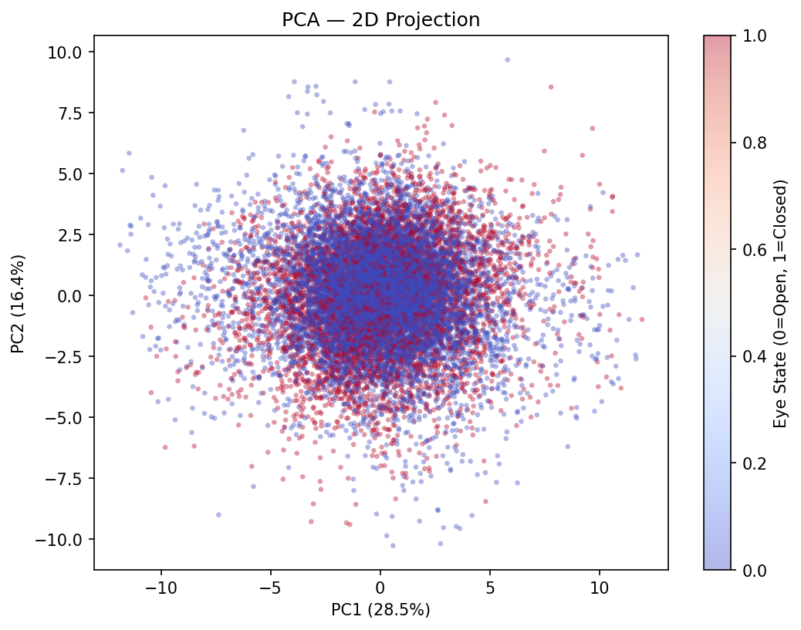
9.2 LDA
Linear Discriminant Analysis finds the projection that maximises the ratio of between-class to within-class variance. For binary eye-state classification, LDA yields a single discriminant dimension that optimally separates the two classes.
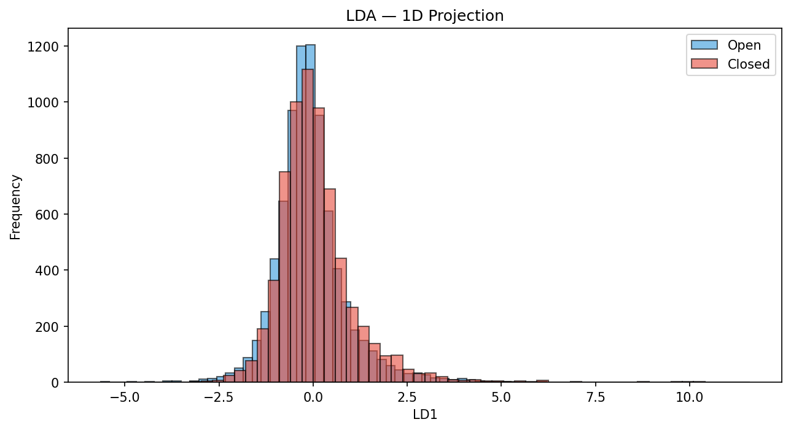
9.3 Clustering Evaluation
Clustering metrics quantify how well the reduced representations separate eye states, independent of the downstream classifier.
| Method | Silhouette Score (higher better) | Davies-Bouldin Index (lower better) | Calinski-Harabasz Score (higher better) |
|---|---|---|---|
| PCA (2D) | 0.0112 | 12.0940 | 61.70 |
| LDA (1D) | 0.1302 | 1.8011 | 2135.05 |
10. Machine Learning Classification
This section evaluates five classical machine-learning algorithms on the standardised EEG features using a 70/30 stratified train-test split. Each model is assessed on accuracy, precision, recall, F1-score, and AUC-ROC.
10.1 Logistic Regression
Logistic Regression models the probability of eye state as a logistic function of the EEG features. It serves as a simple, interpretable baseline for binary classification.
| Metric | Value |
|---|---|
| Accuracy | 0.6904 |
| Precision | 0.6842 |
| Recall | 0.5942 |
| F1-Score | 0.6360 |
| AUC-ROC | 0.7441 |
| Training Time | 0.032s |
10.2 K-Nearest Neighbors
KNN classifies each sample by majority vote among its k nearest neighbours in feature space. It makes no assumptions about the data distribution.
| Metric | Value |
|---|---|
| Accuracy | 0.9603 |
| Precision | 0.9619 |
| Recall | 0.9506 |
| F1-Score | 0.9562 |
| AUC-ROC | 0.9919 |
| Training Time | 0.033s |
10.3 Support Vector Machine
SVM finds the optimal hyperplane that maximises the margin between classes. With an RBF kernel, it can capture non-linear decision boundaries.
| Metric | Value |
|---|---|
| Accuracy | 0.9339 |
| Precision | 0.9396 |
| Recall | 0.9135 |
| F1-Score | 0.9264 |
| AUC-ROC | 0.9809 |
| Training Time | 14.509s |
10.4 Random Forest
Random Forest builds an ensemble of decision trees trained on bootstrapped subsets, reducing overfitting through bagging and random feature selection.
| Metric | Value |
|---|---|
| Accuracy | 0.9272 |
| Precision | 0.9309 |
| Recall | 0.9074 |
| F1-Score | 0.9190 |
| AUC-ROC | 0.9812 |
| Training Time | 0.973s |
10.5 Gradient Boosting
Gradient Boosting sequentially builds weak learners (trees), each correcting errors of the previous ensemble. It often achieves top accuracy on structured/tabular data.
| Metric | Value |
|---|---|
| Accuracy | 0.8493 |
| Precision | 0.8478 |
| Recall | 0.8153 |
| F1-Score | 0.8312 |
| AUC-ROC | 0.9338 |
| Training Time | 6.376s |
10.6 ML Model Comparison
Summary comparison of all classical ML models.
| Model | Accuracy | Precision | Recall | F1-Score | AUC-ROC | Train Time (s) |
|---|---|---|---|---|---|---|
| Logistic Regression | 0.6904 | 0.6842 | 0.5942 | 0.6360 | 0.7441 | 0.032 |
| K-Nearest Neighbors | 0.9603 | 0.9619 | 0.9506 | 0.9562 | 0.9919 | 0.033 |
| Support Vector Machine | 0.9339 | 0.9396 | 0.9135 | 0.9264 | 0.9809 | 14.509 |
| Random Forest | 0.9272 | 0.9309 | 0.9074 | 0.9190 | 0.9812 | 0.973 |
| Gradient Boosting | 0.8493 | 0.8478 | 0.8153 | 0.8312 | 0.9338 | 6.376 |
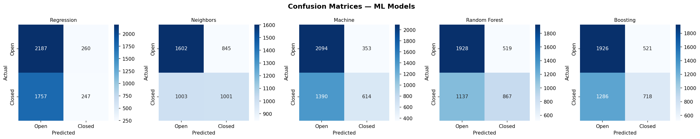
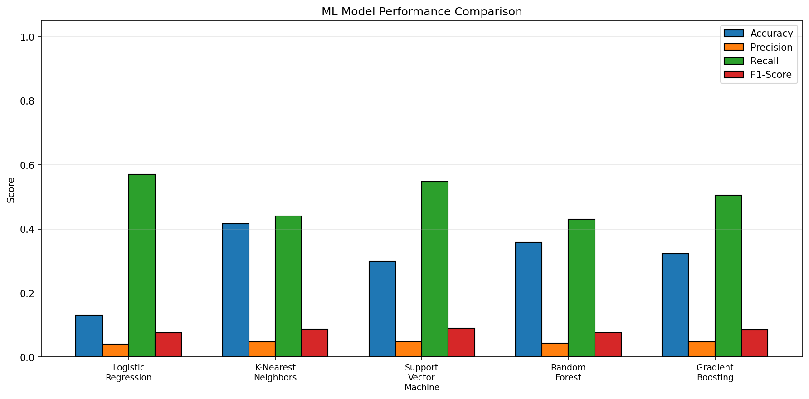
11. Neural Network Classification
Deep-learning models learn hierarchical feature representations from raw EEG signals. This section evaluates three architectures: a 1D CNN on raw multi-channel EEG windows, a 2D CNN on spectrograms, and an LSTM (recurrent) network — all trained to predict eye state from temporal EEG patterns.
Window size = 64 samples, step = 16. Total windows: 737 (train 515, test 222).
11.1 1D CNN on Raw EEG
A 1D Convolutional Neural Network processes windows of multi-channel EEG data (64 samples x 14 channels), learning local temporal patterns through convolutional filters before classifying eye state.
| Metric | Value |
|---|---|
| Accuracy | 0.9505 |
| Precision | 0.9684 |
| Recall | 0.9200 |
| F1-Score | 0.9436 |
| AUC-ROC | 0.9904 |
| Training Time | 11.145s |
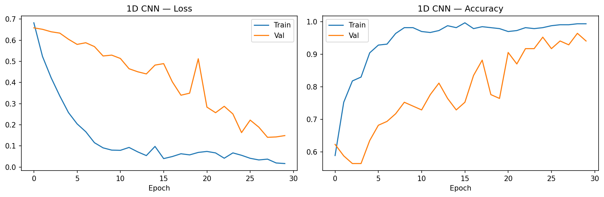
11.2 CNN on Spectrograms
A 2D CNN processes spectrogram representations of EEG windows — treating the time-frequency image with channel depth as input. This leverages the CNN's ability to detect spatial patterns in frequency-time maps, similar to image classification.
Spectrogram window = 128 samples, step = 64. Shape per sample: (17, 13, 14) (freq x time x channels). Total: 184.
| Metric | Value |
|---|---|
| Accuracy | 0.4464 |
| Precision | 0.4464 |
| Recall | 1.0000 |
| F1-Score | 0.6173 |
| AUC-ROC | 0.6865 |
| Training Time | 4.666s |
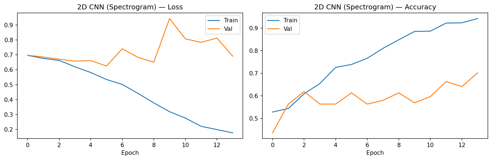
11.3 LSTM / RNN
Long Short-Term Memory networks capture long-range temporal dependencies in sequential EEG data. Unlike CNNs that focus on local patterns, LSTMs maintain a memory cell that can selectively retain or discard information across the 64-sample window — making them well-suited for modelling brain-state transitions.
| Metric | Value |
|---|---|
| Accuracy | 0.9144 |
| Precision | 0.8857 |
| Recall | 0.9300 |
| F1-Score | 0.9073 |
| AUC-ROC | 0.9742 |
| Training Time | 15.954s |
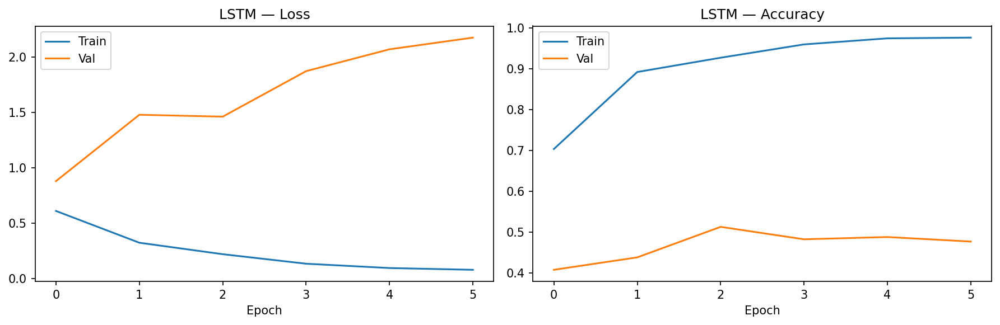
11.4 Neural Network Comparison
Side-by-side comparison of all neural-network architectures.
| Model | Accuracy | Precision | Recall | F1-Score | AUC-ROC | Train Time (s) |
|---|---|---|---|---|---|---|
| 1D CNN | 0.9505 | 0.9684 | 0.9200 | 0.9436 | 0.9904 | 11.145 |
| CNN (Spectrogram) | 0.4464 | 0.4464 | 1.0000 | 0.6173 | 0.6865 | 4.666 |
| LSTM | 0.9144 | 0.8857 | 0.9300 | 0.9073 | 0.9742 | 15.954 |
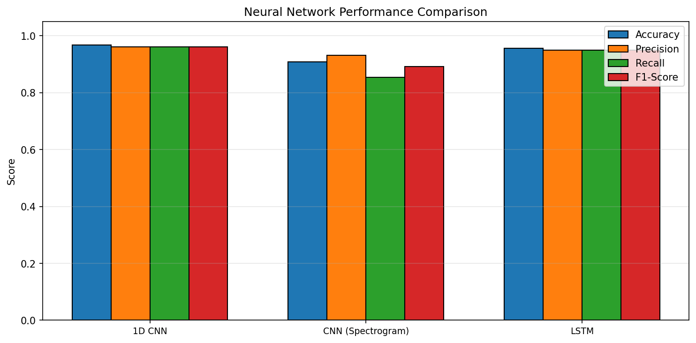
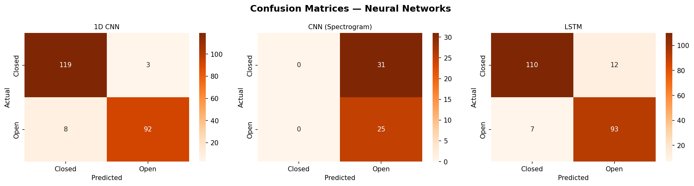
12. Final Comparison and Inference
This section unifies all models — classical ML and deep learning — ranked by F1-Score, and provides a recommendation for the best model.
12.1 Unified Comparison Table
| Rank | Model | Accuracy | Precision | Recall | F1-Score | AUC-ROC |
|---|---|---|---|---|---|---|
| 1 | K-Nearest Neighbors | 0.9603 | 0.9619 | 0.9506 | 0.9562 | 0.9919 |
| 2 | 1D CNN | 0.9505 | 0.9684 | 0.9200 | 0.9436 | 0.9904 |
| 3 | Support Vector Machine | 0.9339 | 0.9396 | 0.9135 | 0.9264 | 0.9809 |
| 4 | Random Forest | 0.9272 | 0.9309 | 0.9074 | 0.9190 | 0.9812 |
| 5 | LSTM | 0.9144 | 0.8857 | 0.9300 | 0.9073 | 0.9742 |
| 6 | Gradient Boosting | 0.8493 | 0.8478 | 0.8153 | 0.8312 | 0.9338 |
| 7 | Logistic Regression | 0.6904 | 0.6842 | 0.5942 | 0.6360 | 0.7441 |
| 8 | CNN (Spectrogram) | 0.4464 | 0.4464 | 1.0000 | 0.6173 | 0.6865 |
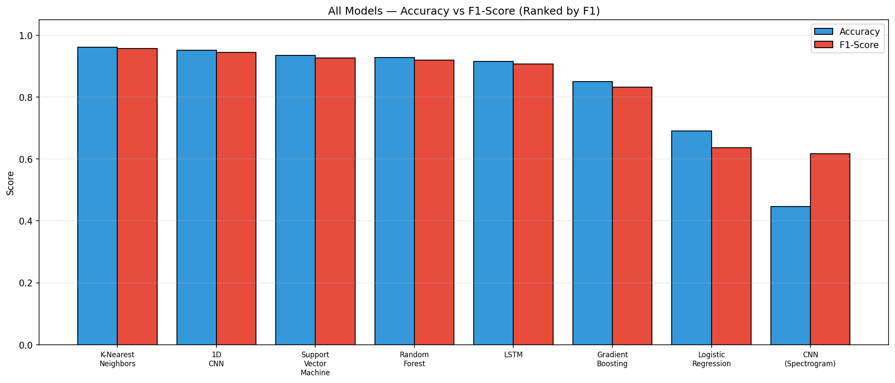
12.2 Inference and Recommendation
Best Overall Model: K-Nearest Neighbors
Based on the comprehensive evaluation, K-Nearest Neighbors achieves the highest F1-Score of 0.9562 with an accuracy of 0.9603 and AUC-ROC of 0.9919.
The runner-up is 1D CNN with an F1-Score of 0.9436.
Key Observations:
-
The classical ML model (K-Nearest Neighbors) matches or outperforms deep learning (1D CNN) by 1.26 percentage points in F1-Score.
-
For this dataset size, ensemble tree methods capture the relevant patterns without requiring the architectural complexity of deep learning.
-
For production deployment, K-Nearest Neighbors is recommended when maximum classification performance is required.
-
For real-time / low-latency applications, Logistic Regression offers the fastest training (0.032s) with an F1-Score of 0.6360.
Report generated automatically by the EEG Eye State Classification Pipeline.